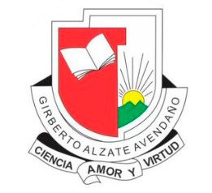

Historia e Identidad
Institucional
Más de 65 años formando ciudadanos íntegros, competentes y comprometidos con el desarrollo de nuestra sociedad.
LA HISTORIA DEL GILBERTO ALZATE AVENDAÑO
El 1 de octubre de 1958, 800 personas del barrio Aranjuez presentaron a la Honorable Asamblea Departamental, presidida por el Dr. Jaime Betancur Cuartas, un memorial solicitando la creación de un establecimiento de secundaria. Como respuesta, el 30 de noviembre del mismo año fue expedida la Ordenanza 26, que creaba el Liceo Departamental de Aranjuez.
El 15 de abril de 1959 se abrieron las matrículas y el 17 del mismo mes se iniciaron las clases con 289 estudiantes, desde primero hasta cuarto de bachillerato, en un viejo edificio situado en la calle 81 con la carrera 91 del barrio Aranjuez. El primer rector fue el señor Luis Oscar Londoño.
En el año 1960, la matrícula ascendió a 350 estudiantes y el Liceo comenzó a funcionar en un local más amplio, donde más tarde funcionaría el Liceo Lorencita Villegas de Santos. Ese mismo año se solicitó a la Honorable Asamblea Departamental la creación de los grados quinto y sexto para completar el ciclo de bachillerato. Aunque varios diputados se opusieron, el proyecto fue aprobado por la mayoría, quienes veían en él una gran oportunidad para la juventud de Aranjuez.
El 19 de diciembre de 1960 fue expedida la Ordenanza 33, que en su artículo 19 dispuso que el Liceo Departamental de Aranjuez se denominaría Liceo Departamental Gilberto Alzate Avendaño. Posteriormente, el 9 de julio de 1961, el presidente de la República, Dr. Alberto Lleras Camargo, colocó la primera piedra para la construcción del edificio donde actualmente funciona la institución.
El 17 de octubre de 1962 y el 15 de octubre de 1963, el Ministerio de Educación Nacional aprobó los estudios del Liceo mediante las resoluciones 4536 y 3655, respectivamente.
En 1967, como consecuencia de la emergencia educativa y siendo el Dr. Oscar Uribe Londoño Viceministro de Educación, se creó la segunda jornada con el nombre de Liceo Cooperativa Anzoátegui, con carácter privado. En 1981, esta jornada fue oficializada con el nombre de Gilberto Alzate Avendaño Segunda Agrupación, con administraciones diferentes para cada jornada. El rector de la primera fue el señor Octavio Díaz Serna y el de la segunda el señor Luis Fernando Pérez.
Durante la década de 1970 a 1980, el Liceo alcanzó su máximo esplendor, destacándose como potencia académica y deportiva a nivel municipal, departamental y nacional. Entre sus ilustres personajes se encuentran: Álvaro Mejía Lalinde (ex rector), Humberto Bermúdez Cardona (actual rector), Libardo Álvarez Lopera (líder comunitario, ex secretario de educación, ex concejal de Medellín, ex rector del Politécnico Colombiano), Silvio Gómez (abogado), Héctor López (abogado y notario), César Augusto Betancur, John Jairo Pérez, Germán Darío Carvajal (reyes de la trova), Oscar Byron Muñoz (campeón de lucha olímpica), John Jairo Cuervo (campeón nacional de tenis de mesa), Martha Menéndez (atleta campeona nacional y departamental), Luis Enrique Cataño (basquetbolista selección Colombia), Álvaro Escobar, León Fernando Villa, Leonel Álvarez, Diego Toro, Jaime Alberto Castrillón y Estiven Vélez (futbolistas profesionales).
En marzo de 2002 se unificaron las dos jornadas bajo una misma administración, siendo rector Humberto Bermúdez Cardona. Atendiendo a las exigencias de la sociedad actual y a los requerimientos de la Ley 715, artículo 9, mediante el Decreto 16210 del 27 de noviembre de 2002 se creó la Institución Educativa Gilberto Alzate Avendaño, como resultado de la fusión del Liceo con las siguientes instituciones: Escuela Seguros Bolívar, Escuela Tomás Carrasquilla Nº 1, Escuela Carlos Villa Martínez, Escuela Carlos E. Restrepo y Liceo Gilberto Alzate Avendaño, para ofrecer el ciclo educativo desde preescolar hasta el grado 11, con media técnica en tecnología e informática.
Las escuelas Tomás Carrasquilla Nº 1 y Carlos E. Restrepo se fusionaron en el año 2003 y en el año 2004 cambiaron de sede, adoptando el nombre de Escuela San Isidro.
Hoy, la I.E. Gilberto Alzate Avendaño continúa su misión de formar ciudadanos íntegros, competentes y comprometidos con el desarrollo de nuestra sociedad. Miles de egresados son testimonio vivo del impacto positivo de nuestra institución, mirando hacia el futuro con la misma pasión y dedicación que caracterizó sus inicios.
Misión
Somos una Institución de educación formal y pública, que ofrece formación integral desde el nivel preescolar hasta la media académica y técnica, atiende las diferencias individuales; propicia la inclusión y la permanencia de la población en el sistema educativo y desarrolla competencias académicas, ciudadanas, deportivas y culturales. Se integra al contexto social en el cual se encuentra y propone soluciones por medio del trabajo colaborativo para transformar su entorno, a partir de la ética y compromiso de su recurso humano.
Visión
Nuestra Institución Educativa Gilberto Álzate Avendaño continuará siendo reconocida por su énfasis en el desarrollo integral de niños, adolescentes y jóvenes con eficientes niveles de formación académica de acuerdo a sus potencialidades y diversidad, visualizados en las pruebas SABER y demás pruebas externas y en la formación humana desde la participación social, las expresiones culturales, deportivas y de convivencia ciudadana, fortaleciendo el liderazgo en su comunidad.
Himno Institucional
Marchad siempre adelante,
Poderosa juventud
Por este lema triunfante
Ciencia, amor y virtud.
Por doquiera pregonemos el amor y la verdad
y las cumbres escalemos donde impera el ideal
Adelante coloquemos los afanes, la ansiedad, y por siempre
Conquistemos la ciencia y la libertad.
Si la juventud desdeña de la ciencia el batallar,
Esa gloria con que sueña, nunca logrará alcanzar
Pero si el amor le enseña la manera de triunfar
En la cumbre será dueña donde siempre ha de reinar.
Aquel venero profundo de ciencia, luz y calor
por el espacio profundo, busquemos ya sin rencor
Con arrojo sin segundo para implorar con fervor
La virtud que niega el mundo ascendamos con amor.
Letra: Eliodoro Rojas Olarte
Música: Luis Carlos Uribe
Himno Institucional (reproductor)
Nuestros Símbolos
La Bandera del Colegio
BLANCO: Nos invita al trabajo transparente, al respaldo a las diferencias, a ser tolerantes y solidarios. Representa la pureza y la transparencia de los miembros de la comunidad educativa. El blanco aporta paz y alivia la sensación de desespero. Ayuda a limpiar y aclarar las emociones, los pensamientos y el espíritu.
ROJO: Representa la confianza en sí mismo, el coraje de los miembros de la comunidad educativa y la aptitud positiva que maestros y alumnos debemos tener ante la educación y la vida.

El Escudo
ROJO: Representa la alegría y el esfuerzo permanente de nuestra juventud alzatista "Marchad siempre adelante poderosa juventud". El rojo denota pureza y la felicidad de alumnos y maestros en busca de la prosperidad educativa.
AMARILLO – SOL: Representa el nuevo camino pedagógico hacia el resplandor Alzatista. Ilumina los saberes de la ciencia, el amor y la virtud. Es alegre y simboliza en la institución las actividades culturales y deportivas que simbolizan (alegría). Se asocia en la parte académica de la institución partiendo de la intelectualidad y expresión de nuestros pensamientos.
VERDE – MONTAÑAS: El color verde tiene una fuerte afinidad con la naturaleza y nos conecta con ella, nos hace empatizar con los demás encontrando de una forma natural las palabras justas. El verde nos crea un sentimiento de confort y relajación de calma y paz interior nos hace sentir equilibrados interiormente.